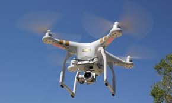

There are different kinds of drone models of cameras drones that can record photos or videos in HD, Full HD,
or 4K, with the camera mounted on a 2-axis or 3-axis nacelle for perfect image stability.

They can be equipped with different features, GPS, people tracking, route programming, etc. Getting smaller
and more sophisticated, it allows you to capture magnificent images from almost anywhere! Be aware, however,
that the production and distribution of photos or videos taken in the airspace are strictly regulated.